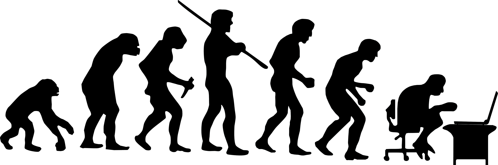

История профессии фронтенд-разработчика
Профессия фронтенд-разработчика прошла долгий путь от появления первых
веб-страниц до современного состояния, когда разработка
пользовательских интерфейсов требует глубоких знаний и множества
инструментов.

Ранние годы: начало веб-разработки (1990-е)
С момента создания первого веб-сайта в 1991 году и до конца 1990-х, веб-страницы были простыми текстовыми документами с гиперссылками, созданными с помощью HTML. В 1995 году появился JavaScript, который позволил делать страницы более интерактивными. В этом периоде фронтенд-разработчики часто занимались и разметкой, и программированием, так как разделение на фронтенд и бэкенд еще не существовало.
2000-е годы: рост сложности и специализация
В 2000-х годах веб-сайты стали сложнее и динамичнее, благодаря появлению технологий вроде AJAX, позволяющих обновлять страницы без перезагрузки. Это привело к появлению специализации фронтенд-разработчиков, которые начали углубляться в создание сложных пользовательских интерфейсов. В этот период также активно развивались стандарты HTML и CSS, что способствовало росту популярности фронтенд-разработки.
2010-е годы: фреймворки и библиотеки
В 2010-х появились фреймворки и библиотеки, такие как React, Angular и Vue.js, которые изменили подход к разработке интерфейсов, позволив создавать более быстрые и сложные веб-приложения. В это время также популяризировались CSS-препроцессоры и системы сборки, что сделало процесс разработки более эффективным и организованным.
Современность
Сегодня фронтенд-разработчики должны быть экспертами не только в HTML, CSS и JavaScript, но и в современных фреймворках, инструментах для тестирования и автоматизации, а также в принципах UX/UI-дизайна. Мобильная версия веба стала важнейшей частью разработки, и веб-страницы должны быть адаптивными, чтобы корректно отображаться на разных устройствах.
Заключение
Профессия фронтенд-разработчика претерпела значительные изменения с момента своего появления, и сегодня требует от специалистов широких знаний и навыков. Веб-разработка продолжает развиваться, и в будущем можно ожидать ещё больше инноваций и новых инструментов, которые будут определять роль фронтенд-разработчика.
Ранние годы: начало веб-разработки (1990-е)
С момента создания первого веб-сайта в 1991 году и до конца 1990-х, веб-страницы были простыми текстовыми документами с гиперссылками, созданными с помощью HTML. В 1995 году появился JavaScript, который позволил делать страницы более интерактивными. В этом периоде фронтенд-разработчики часто занимались и разметкой, и программированием, так как разделение на фронтенд и бэкенд еще не существовало.
2000-е годы: рост сложности и специализация
В 2000-х годах веб-сайты стали сложнее и динамичнее, благодаря появлению технологий вроде AJAX, позволяющих обновлять страницы без перезагрузки. Это привело к появлению специализации фронтенд-разработчиков, которые начали углубляться в создание сложных пользовательских интерфейсов. В этот период также активно развивались стандарты HTML и CSS, что способствовало росту популярности фронтенд-разработки.
2010-е годы: фреймворки и библиотеки
В 2010-х появились фреймворки и библиотеки, такие как React, Angular и Vue.js, которые изменили подход к разработке интерфейсов, позволив создавать более быстрые и сложные веб-приложения. В это время также популяризировались CSS-препроцессоры и системы сборки, что сделало процесс разработки более эффективным и организованным.
Современность
Сегодня фронтенд-разработчики должны быть экспертами не только в HTML, CSS и JavaScript, но и в современных фреймворках, инструментах для тестирования и автоматизации, а также в принципах UX/UI-дизайна. Мобильная версия веба стала важнейшей частью разработки, и веб-страницы должны быть адаптивными, чтобы корректно отображаться на разных устройствах.
Заключение
Профессия фронтенд-разработчика претерпела значительные изменения с момента своего появления, и сегодня требует от специалистов широких знаний и навыков. Веб-разработка продолжает развиваться, и в будущем можно ожидать ещё больше инноваций и новых инструментов, которые будут определять роль фронтенд-разработчика.